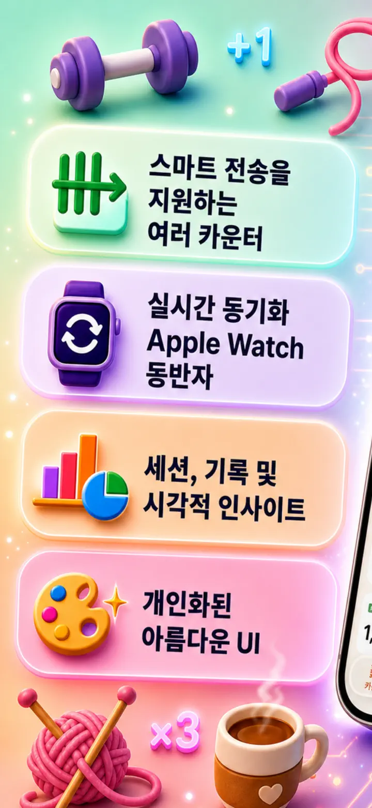
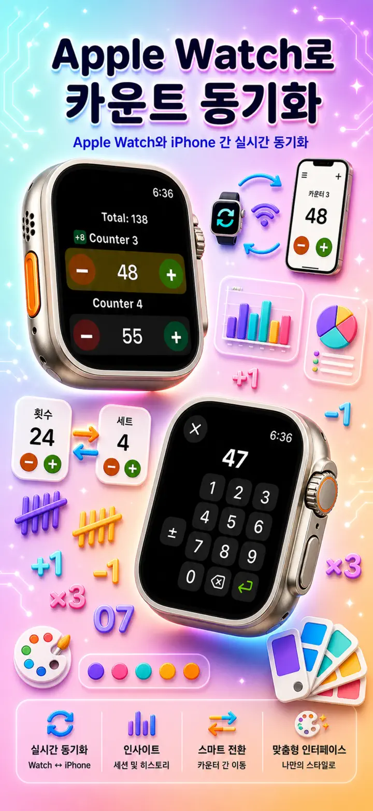
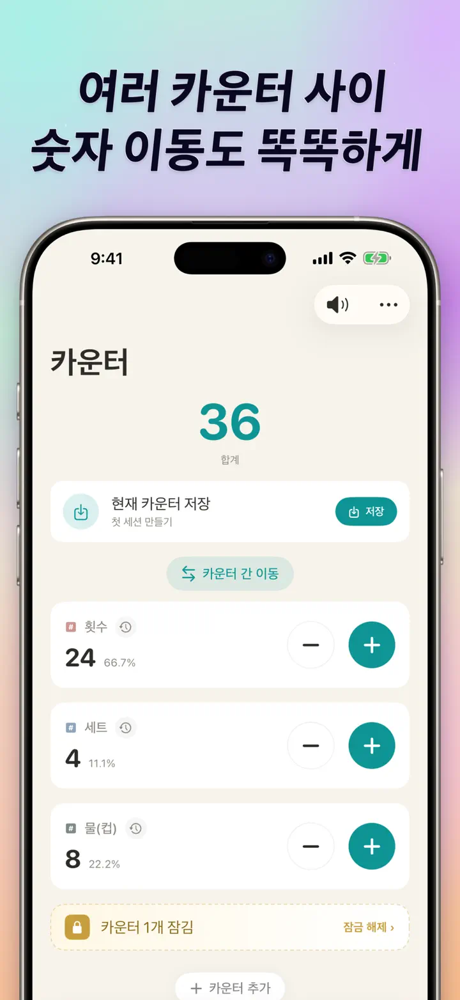
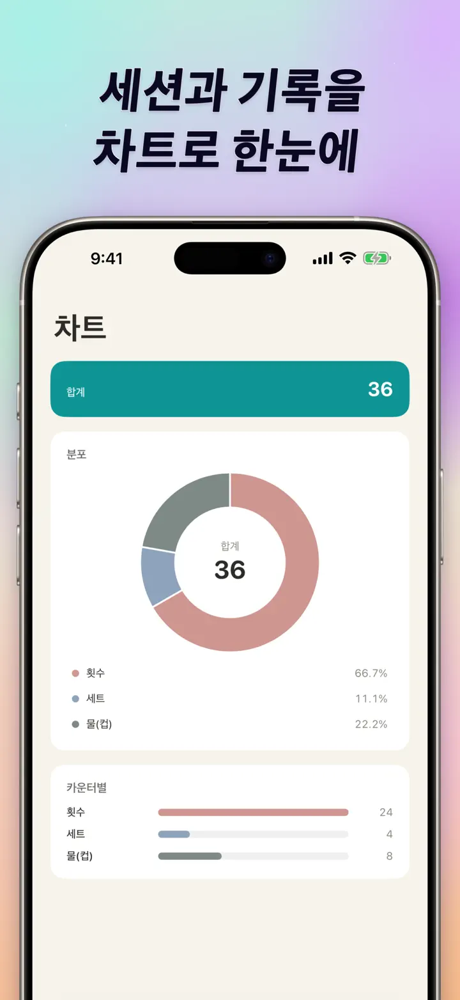
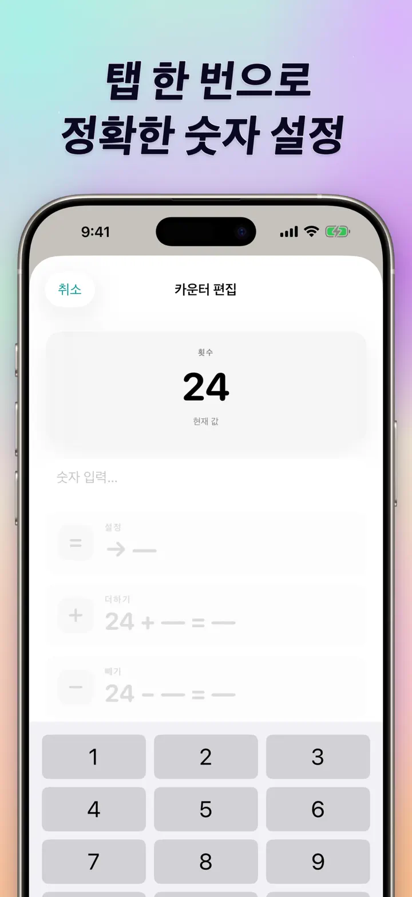
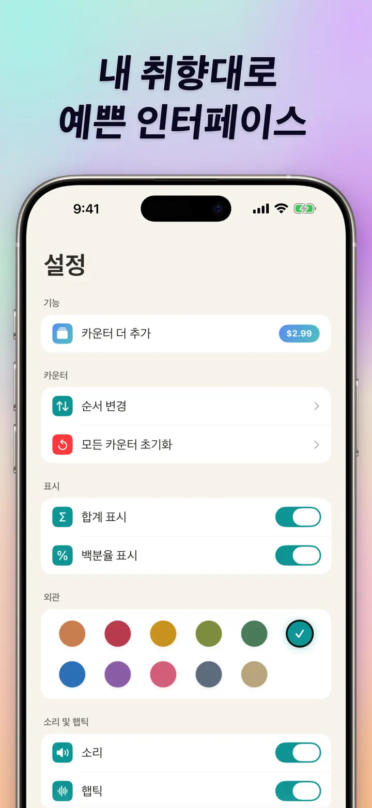
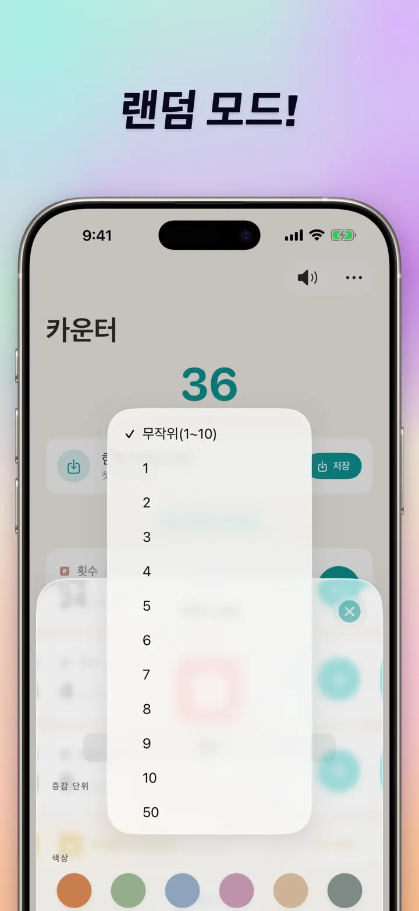

카운터 123
Watch 동기화·클릭·점수
신규: 홈 화면 위젯 — App을 열지 않고 위젯에서 바로 +/- 탭. 카운터·클리커, Apple Watch 동기화, 랜덤 모드, 차트, 기록.
App Store에서 다운로드
앱 정보
카운터 123은 iPhone, iPad, Apple Watch를 위해 만든 빠르고 유연한 탤리 카운터입니다. 이름과 색상을 지정하고 무엇이든 세어보세요 — 운동 횟수, 묵주, 뜨개질 단수, 수업 점수, 야구 투구수, 재고, 게임 스코어까지. 데이터는 모두 기기에 로컬로 저장되며 오프라인에서 완벽히 작동합니다.
맞춤 카운터
- 활동, 게임, 루틴, 목록마다 별도의 카운터를 만드세요
- 카운터마다 이름과 색상으로 개인화
- 드래그 앤 드롭으로 자유 재배열
- 길게 눌러 빠르게 연속 카운트
- 완전 오프라인 — 가입·클라우드 불필요
즉시 입력 & 일괄 연산
- 아무 카운터나 탭해서 시작값 직접 설정 — 0부터 다시 시작할 필요 없음
- 일괄 가감: 원하는 숫자만큼 한 번에 더하거나 빼기
- 값 이동: 두 번 조작 없이 한 카운터에서 다른 카운터로 값 전송
- 사용자 지정 증분: 한 탭으로 1, 5, 10, 100, 원하는 값만큼 증가
- 실시간 변경 표시: 모든 변경을 즉시 하이라이트
랜덤 모드
- 탭할 때마다 1~10 사이의 새 값을 무작위로 굴립니다
- + 버튼으로 더하고 - 버튼으로 무작위 값을 뺄 수 있습니다
- 드릴, 게임, 랜덤 보상, 수업 활동, 연습 루틴에 유용합니다
- 모든 랜덤 탭은 카운터 기록에 저장됩니다
합계 & 차트
- 전체 카운터의 합계를 한눈에
- 백분율 보기: 각 카운터의 비중을 시각화
- 막대 차트: 숫자(#)와 퍼센트(%) 모드 전환
- 값 기준 정렬로 순위를 즉시 확인
기록 & 공유
- 변경 이력: 가산·감산·편집 모두 기록
- 카운터 세트를 저장하고 언제든 다시 불러오기
- 팀, 학생, 친구와 카운터 구성 공유
- 기록을 날짜별 로그, 그룹 세션, 일/주/월 통계로 볼 수 있습니다
Apple Watch 실시간 동기화
- iPhone 또는 Apple Watch에서 변경하면 두 기기가 함께 동기화됩니다
- 네이티브 watchOS 앱 — 껍데기만 있는 컴패니언이 아닙니다
- 카운터 이름·색상·값이 손목에서 완전 동기화
- 탭으로 카운트, 길게 눌러 연속 가산
- iPhone이 멀리 있어도 독립적으로 작동
iPhone·iPad·Apple Watch 모두 지원
- 모든 화면 크기에 최적화된 레이아웃
- iPad는 더 많은 카운터를 한 번에 표시, Split View 지원
- 프라이버시 우선: 로컬 저장, 클라우드·계정 없음
이럴 때 완벽해요
- 헬스장 운동 횟수 & 세트 수
- 뜨개질 단수 & 코바늘 코 수
- 묵주·염주·기도 횟수
- 수업 점수 & 학생 인원
- 야구 투구수 & 타석 수
- 재고 관리 & 순환 카운트
- 보드게임·카드게임·화투 점수
- 수영·러닝 랩 카운트
- 조류 관찰 라이프 리스트
- 이벤트 인원 카운트
- 습관 추적 & 목표 달성
- 창고 재고 카운트
카운터 123를 다운로드하고 모든 카운트를 쉽고 빠르게 — 명확하게, 빠르게, 프라이빗하게.
개인정보 처리방침: https://masawata.net/privacy-policy.html 이용 약관: https://www.apple.com/legal/internet-services/itunes/dev/stdeula/
스크린샷






카운터 123
신규: 홈 화면 위젯 — App을 열지 않고 위젯에서 바로 +/- 탭. 카운터·클리커, Apple Watch 동기화, 랜덤 모드, 차트, 기록.
App Store에서 다운로드